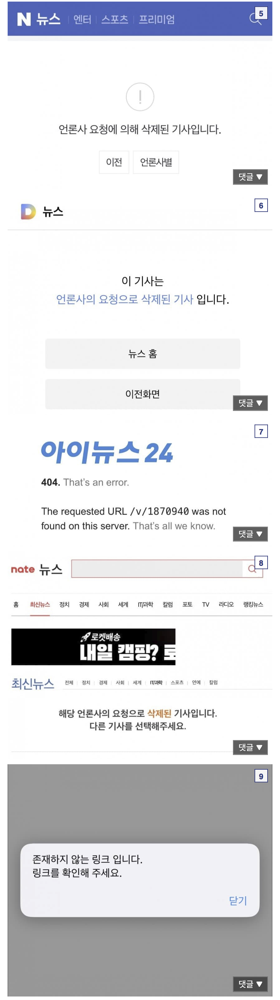

S23 - 카메라 초점 뿌옇게 되는 이슈
삼성 - 소프트웨어로 해결됨
결말 - 해결 X
S24 - GPS 제대로 못잡는 이슈
삼성 - 소프트웨어로 해결됨
결말 - 해결 X
S26 - 번인 이슈
삼성 - 소프트웨어로 해결됨
결말 - 해결 X (A/S센터에 무상으로 교체 해주지말라고 지침)
폴드8 - 디스플레이 눌림 결함
삼성 - 설계 바꿔서 눌리는게 정상
소비자 - 그럼 안눌리는건 하자품이네?
삼성 - 그것도 정상
소비자 - 띠용???
결말 - 해결 X

25플 폭발은 ㄹㅇ 어떻게 할건지